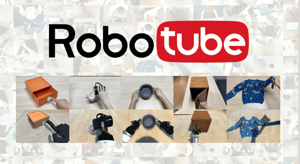
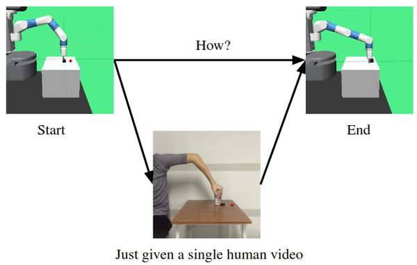

New Scientist Article
Haoyu Xiong
I am a PhD student in the Department of EECS at MIT, advised by Prof. Antonio Torralba and Prof. Yilun Du.
Before joining MIT, I was fortunate to work with Prof. Shuran Song at Stanford University and Prof. Deepak Pathak at Carnegie Mellon University.
My research focuses on AI at the intersection of computer vision, machine learning, and robotics. I care about real-world robot manipulation. I'm open to collaboration. If you are interested in (video) world modeling / policy learning, data-centric robot system (electronic/mechanical) design, feel free to email me.
G. Scholar Github LinkedIn Twitter
haoyux [at] csail.mit.edu

Highlights
News
Aug. 2025 Joined MIT EECS as a PhD student.
Aug. 2025 Vision in Action was accepted to CoRL 2025 — see you in Seoul!
Jun. 2025 Co-organized the workshop on Mobile Manipulatio at RSS 2025.
May. 2025 Wrapped up a wonderful visit at REAL at Stanford University. Thank you, Shuran!
Mar. 2024 Our mobile manipulation research was highlighted in "Images of the Month" of Nature.
Feb. 2024 Open-world Mobile Manipulation was featured by Nautre AI & robotics briefing and New Scientist .
Research

OpenTouch: Bringing Full-Hand Touch to Real-World Interaction
Yuxin Ray Song, Jinzhou Li, Rao Fu, Devin Murphy, Kaichen Zhou, Rishi Shiv, Yaqi Li, Haoyu Xiong, Crystal Elaine Owens, Yilun Du, Yiyue Luo, Xianyi Cheng, Antonio Torralba, Wojciech Matusik, Paul Pu Liang
Webpage
Vision in Action: Learning Active Perception from Human Demonstrations
Haoyu Xiong, Xiaomeng Xu, Jimmy Wu, Yifan Hou, Jeannette Bohg, Shuran Song
CoRL 2025
Webpage

Adaptive Mobile Manipulation for Articulated Objects In the Open World
Haoyu Xiong, Russell Mendonca, Kenny Shaw, Deepak Pathak
Webpage

Bimanual Dexterity for Complex Tasks
Kenneth Shaw, Yulong Li, Jiahui Yang, Mohan Kumar Srirama, Ray Liu, Haoyu Xiong, Russell Mendonca, Deepak Pathak
CoRL 2024
Webpage

SPIN: Simultaneous Perception, Interaction and Navigation
Shagun Uppal, Ananye Agarwal, Haoyu Xiong, Kenneth Shaw, Deepak Pathak
CVPR 2024
Webpage

RoboTube: Learning Household Manipulation from Human Videos with Simulated Twin Environments
Haoyu Xiong, Haoyuan Fu, Jieyi Zhang, Chen Bao, Qiang Zhang, Yongxi Huang, Wenqiang Xu, Animesh Garg, Huazhe Xu, Cewu Lu
CORL 2022 Oral(6.5%)
Webpage

Learning by Watching: Physical Imitation of Manipulation Skills from Human Videos
Haoyu Xiong, Quanzhou Li, Yun-Chun Chen, Homanga Bharadhwaj, Samrath Sinha, Animesh Garg
IROS 2021
RSS 2021 Workshop Spotlight Talk
Website